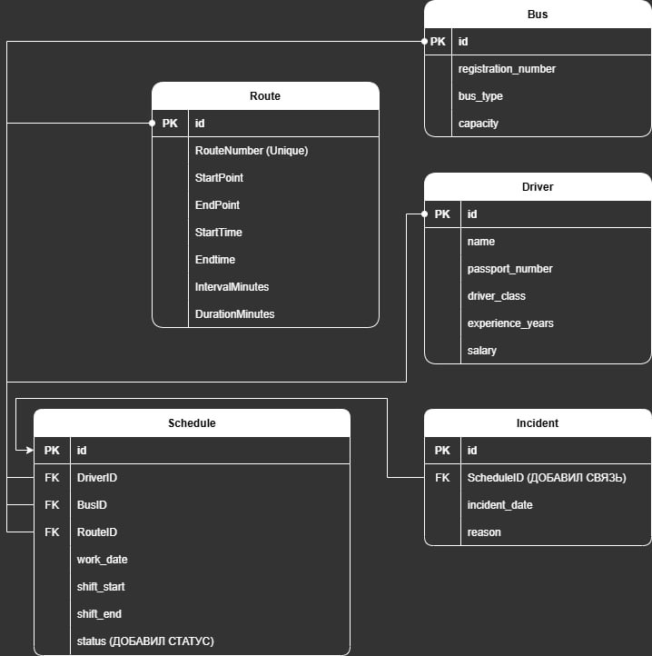

Лабораторная работа #3. Реализация серверной части на django rest. Документирование API.
Ход работы
Было решено выполнить работу на основе задания по созданию системы для диспетчера частной автобусной фирмы.

Запросы
CRUD-запросы для автобусов
# Все для модели автобуса
class BusesListAPIView(generics.ListAPIView):
serializer_class = BusSerializer
queryset = Bus.objects.all()
class BusesDestroyView(generics.DestroyAPIView):
serializer_class = BusSerializer
queryset = Bus.objects.all()
lookup_field = 'registration_number'
class BusesCreateView(generics.CreateAPIView):
serializer_class = BusSerializer
queryset = Bus.objects.all()
CRUD-запросы для маршрутов
# Все для модели маршрута
class RoutesListAPIView(generics.ListAPIView):
serializer_class = RouteSerializer
queryset = Route.objects.all()
class RoutesCreateView(generics.CreateAPIView):
serializer_class = RouteSerializer
queryset = Route.objects.all()
class RoutesDestroyView(generics.DestroyAPIView):
serializer_class = RouteSerializer
queryset = Route.objects.all()
lookup_field = 'route_number'
CRUD-запросы для водителей
# Все для модели водителя
class DriversListAPIView(generics.ListAPIView):
serializer_class = DriverSerializer
queryset = Driver.objects.all()
class DriverCreateView(generics.CreateAPIView):
serializer_class = DriverSerializer
queryset = Driver.objects.all()
class DriverDetailView(generics.RetrieveAPIView):
serializer_class = DriverSerializer
queryset = Driver.objects.all()
lookup_field = 'passport_number'
class DriverUpdateView(generics.UpdateAPIView):
serializer_class = DriverSerializer
queryset = Driver.objects.all()
lookup_field = 'passport_number'
class DriverDeleteView(generics.DestroyAPIView):
serializer_class = DriverSerializer
queryset = Driver.objects.all()
lookup_field = 'passport_number'
CRUD-запросы для расписания
# Все для модели расписания
class SchedulesListAPIView(generics.ListAPIView):
serializer_class = ScheduleSerializer
queryset = Schedule.objects.all()
class ScheduleCreateView(generics.CreateAPIView):
serializer_class = ScheduleSerializer
queryset = Schedule.objects.all()
class ScheduleUpdateView(generics.UpdateAPIView):
serializer_class = ScheduleSerializer
queryset = Schedule.objects.all()
class ScheduleDeleteView(generics.DestroyAPIView):
serializer_class = ScheduleSerializer
queryset = Schedule.objects.all()
Запросы из задания
Отображение водителей по маршруту
class DriversByRouteView(APIView):
def get(self, request, route_number):
schedules = Schedule.objects.filter(route__route_number=route_number).select_related('driver', 'route')
serialized_data = ScheduleSerializer(schedules, many=True).data
return Response(serialized_data)
Время начала и конца маршрутов
class RouteTimingView(APIView):
def get(self, request):
routes = Route.objects.all()
data = routes.values('route_number', 'start_time', 'end_time')
return Response(data)
Суммарная длительнось всех маршрутов
class TotalRouteDistanceView(APIView):
def get(self, request):
total_distance = Route.objects.aggregate(total_distance=Sum('duration_minutes'))
return Response({'total_distance': total_distance['total_distance']})
Автобусы, которые не выехали на маршрут по конкретной дате
class AbsentBusesView(APIView):
def get(self, request, date):
incidents = Incident.objects.filter(schedule__work_date=date)
serialized_data = IncidentSerializer(incidents, many=True).data
return Response(serialized_data)
Количество водителей каждого класса
class DriverCountByClassView(APIView):
def get(self, request):
driver_counts = Driver.objects.values('driver_class').annotate(count=Count('id'))
return Response(driver_counts)
Полный отчет
class FleetReportView(APIView):
def get(self, request):
bus_types = Bus.objects.values('bus_type').annotate(
bus_count=Count('id'),
route_count=Count('schedules__route', distinct=True),
driver_count=Count('schedules__driver', distinct=True),
)
total_distance = Route.objects.aggregate(total_distance=Sum('duration_minutes'))
driver_stats = Driver.objects.aggregate(
avg_age=Avg('experience_years'), total_count=Count('id')
)
report = {
'bus_types': list(bus_types),
'total_route_distance': total_distance['total_distance'],
'driver_stats': driver_stats,
}
return Response(report)